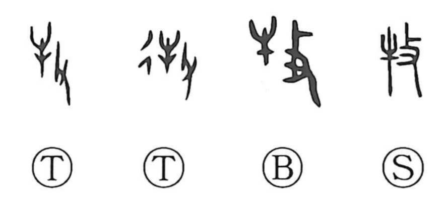

牧

Kun: maki | On: boku
to herd ・ to pasture ・ herdsman ・ pasture
Explanation
牧 is a compound of 牛, “cattle,” and 攴, the hand holding a twig or switch, which came to mean striking or urging on. The character evokes driving cattle with a light switch out to graze, and by extension means to tend or raise livestock. It is not limited to cattle: horses, sheep, and similar herd animals are included. From the act of herding it further extends to the place where such animals are pastured, as seen in 牧場, ‘pasture’ (makiba, bokujo), and 牧 as ‘pasturage’ (maki).